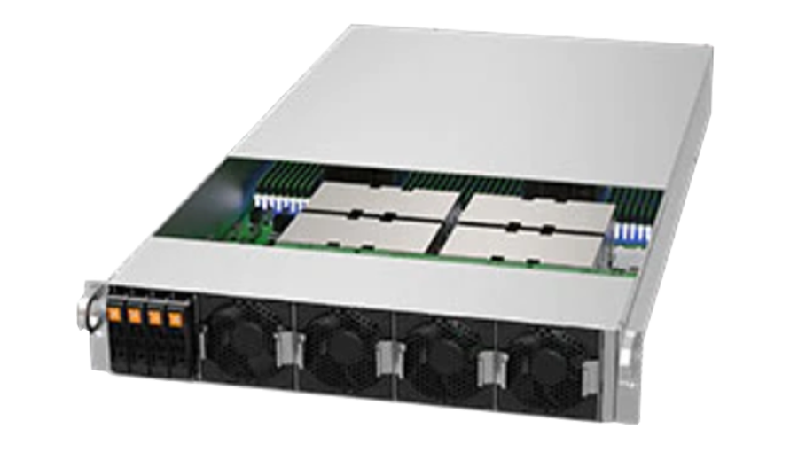
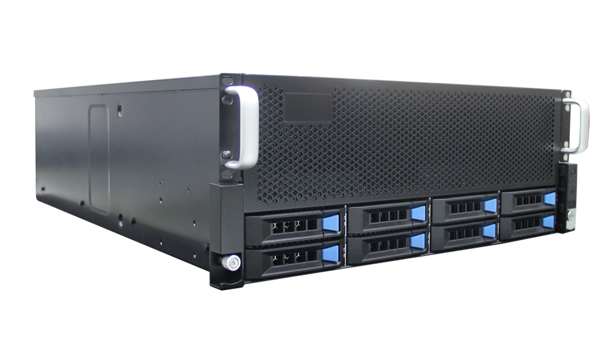
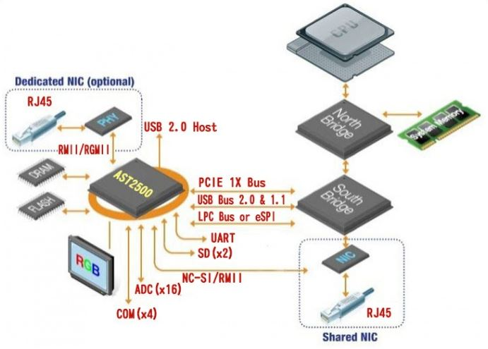
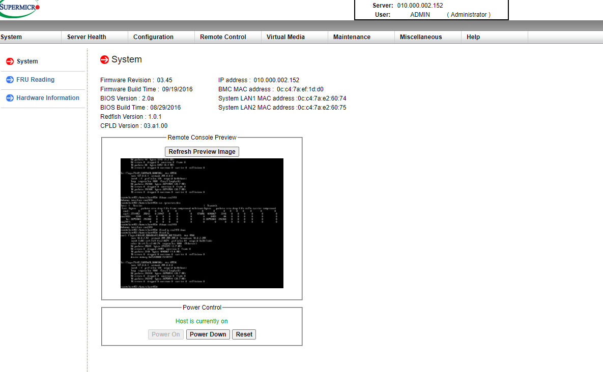

Preface
Recently I got 14 bare-metal machine from my lab. I need to deploy my own modified slurm in theis cluster. It’s so hard to build a cluster from a bare mental without anything. I decide to record problems I faced and how to solve them.
Slurm Source Code Install | Cluster Deployment - Day1 cluster power up
Bare-metal
The 14 bare-metal server is AMAX server. And The AMAX property is following:
G204-H2

G404-H2

Go to power up the bare mental offline
Fisrt we need to set the power for AMAX server. we plugin the power and open the server. After opening them, we can use “del” or “f11” enter the bios system.
Then the core work of my first step is about the BMC. First I need to know what is BMC. I just cite it from
[https://www.servethehome.com/explaining-the-baseboard-management-controller-or-bmc-in-servers/]
A baseboard management controller, or BMC, is a small computer that sits on virtually every server motherboard. Other components such as higher-end switches, JBODs, JBOFs, and other devices now include BMCs as well. The largest vendor for BMCs today is ASPEED.
The ASPEED digram is shown as following:

I think this paradigm is classical. The AST2500 (ASPEED) has it own dedicated NIC (management NIC). but I only have one cable. I need to reuse the shared NIC for BMC.
After that I can use my computer connect with BMC so that I can get the monitor of the server form RGB monitor in BMC.
In the bios system, we can modify setting of network chip or (NIC).
we enter the bios system and find the BMC setting. we need to change the mode of Share NIC as NCSI mode. Then we reuse the shared NIC for server and BMC. Then we set the shared NIC as a static IP, mask, Gateway in the Bios. Then we can reach the BMC!
Finally Because my computer and 14 bare metal are in the same switch, I try to ping them and success! which means I have set the BMC IP,mask,Gateway.
Enter the BMC Managment Interface
BMC use http to manage the bmc and server. We can just type in http:bcm’s ip in the chrome. Then we can see the BMC’s interface. But first we need to type the admin and admin’s password. However I don’t remeber password. Then I search my server in the Internet and find the default BMC’s management ID and password. After entering the management interface, we can see that:

We can see it’s a supermicr UI. Then I need to remote control the server. I open the remote control interface and choose Console Redirection: Launch the redirection console via Java viewers.
After that I can download a jnlp file. it’s a java file. java network launching protol. It’s a client app. we can open it through jws.
After open it we finally enter the monitor interface. I can use my keyboard and BMC monitor to input the instructions and observe the feedback from the monitor.